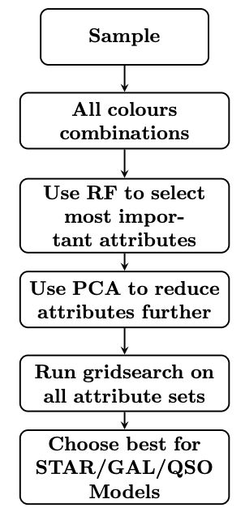
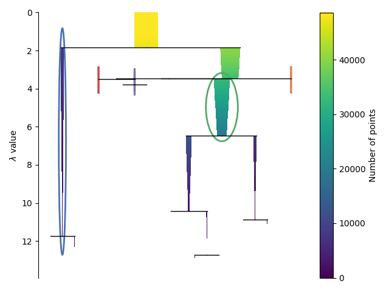

binary_classifier module¶
-
binary_classifier.run_binary(conf, lib)¶ Wrapper function for binary classifier code.
- Args:
conf (object): contains config variables
lib (object): contains helper functions
Returns:
In short, the binary_classifier module takes an input catalogue with labels, and uses the photometic bands in the catalogue to create colours. These colours are then used as attributes to train a classifier to classify the datapoints.
Here we give a run-through of the code, taking as an example the star classifier. The bulk of this script is summarized in the image below.
{kind=link}
Description of code¶
Setup: The training catalogue is read in with the get_data function, and
we specify the filetype (here in .csv format). The target is also defined -
this is done using the hclass_dict to convert the star into its
numeric representation (as defined in the config module).
Prepare attributes: Then the get_all_features function is called. It is
passed photo_band_list, which defines the filters considered, which are
later used in the function get_all_features to create all colour combinations
among them. The variable combine_type takes the values `subtract’
or `divide’ depending on the input data (magnitudes or fluxes respectively).
It also takes the catalogue data and target name and the corresponding numeric representation.
Scaling: The do_scale function is then called to scale the data (mean of 0
and variance of 1 for each attribute column). The scaler object is saved too, for
use in the prediction stage later on.
RF gridsearch: The do_random_forest function is then called which runs a
hyperparameter gridsearch on a RF classifier to obtain the best hyperparameter setup
(if gridsearch is set to True) to then run this RF once using the labels
star/non-star (in this example), which provides a list of important attributes,
which is then used later.
HDBSCAN gridsearch: The do_hdbscan_gridsearch function is then called,
which runs the gridsearch on HDBSCAN, finding the best setup for the binary star
classifier (in this example), trying different numbers of the top RF attributes
from the list of importances (RF_top) as found in the do_random_forest function call,
different numbers of dimensions to which to reduce these attributes to using PCA (ncomp),
and then a different value of min_cluster_size for the hdbscan hyperparameter itself.
Process HDBSCAN gridsearch output: After this gridsearch is completed,
compute_performances is called to create a file with the associated
metric scores for each of the classifiers’ setups (different numbers of top
RF attributes, different PCA dimensions, different min_cluster_size).
The find_best_hdbscan_setup function is called to find the best setup
for the classifier in question (e.g. star), and then write_best_labels_binary
writes these best labels to a separate csv file in terms of a binary setup
(i.e. 1 for e.g. star, 0 for e.g. non-star). We also save the best setups to a
text file (i.e. how many top RF attributes used, to how many dimensions they were
reduced using PCA, and what min_cluster_size was used for HDBSCAN).
Save best HDBSCAN classifier: The function train_and_save_hdbscan is then
called to train and save the HDBSCAN classifier and save the trained HDBSCAN
classifier object (later used in the prediction stage). The PCA object is also
saved to be run on the new data in the prediction stage. The position of each datapoint
in PCA space is also saved to a text file. A dendrogram plot
of each trained HDBSCAN clusterer is also saved.
Outputs: The only images output from this module run are dendrograms of the HDBSCAN clusterer for each of the star/gal/QSO setups (see the example for the star setup below), and can be found in the data/output/hdbscan_gridsearch directory.
{kind=link}